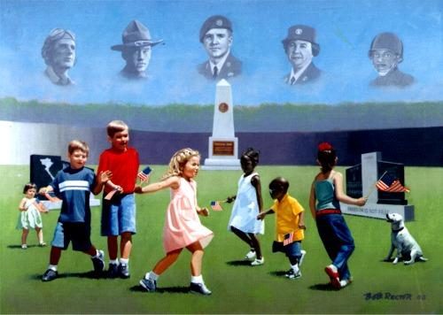

Legacy of Freedom
by Bob Rector
Freedom Memorial Park in downtown Fayetteville, NC is designed to be one of the premier Veterans parks in the southeastern United States. When complete, it will serve as a fitting tribute to the men and women in uniform who have served our country.
This $1.5 million project will be funded by private donations. As part of the fund-raising campaign, renowned artist Bob Rector was commissioned to create Legacy of Freedom. His image of carefree children at play represents the freedom we enjoy because of our veterans' sacrifices.

click image to enlarge
{kind=link}
Reproductions of Legacy of Freedom on canvas in limited and unlimited editions are available and a portion of all proceeds benefits Freedom Memorial Park. To order, contact us through this website, visit City Center Gallery & Books at 112 Hay Street, Fayetteville, NC or call us at (910)678-8899.
Call out our names as the years go by
Remember us and we shall never die.
Veterans (left to right)
Second Lieutenant Horace Rock
Miller - flew 15 combat missions in WWII in the P-47 Jug
from Ie Shima in the Okinawan Islands. After the war, went to medical school and practiced in Fayetteville, NC for 40 years.
Sergeant Noel Paton – served with the 344th Tank Corps in WWI and received the Distinguished Service Cross for extraordinary heroism at Woel, France on Sept 14, 1918. After the war, owned and operated a commercial photography studio in downtown Fayetteville until 1960.
Tech Sergeant John A. Chapman – combat controller with the 24th Special Tactics Squadron. First uniformed American serviceman killed by enemy fire in Afghanistan. Awarded the Air Force Cross posthumously for heroism against the enemy during a firefight in the eastern highlands of Afghanistan on March 4, 2002.
WAC Hazel Elphee – her signed photograph was found in a picture album kept by WACs at Ft. Bragg during WWII. Although no biographical information was available, the artist was struck by her poise and the kindness in her face. She represents all women who served their country and the cause of freedom so nobly during WWII.
Chief Warrant Officer 3 Fred Farmer – served in the all-black 555th Parachute Infantry Battalion (the "Triple Nickel") from 1946 to 1947 and the 505th Airborne from 1948-1953. Later, two tours of duty flying combat missions in Vietnam. Awards include the Master Parachutist and Glider Badges, Air Medal with 17 OLC, two Army Commendation Medals, and the Vietnamese Cross for Gallantry. Retired as Chief Warrant Officer 3 in 1967. Resides in Fayetteville, NC after 29 years in the U.S. Civil Service.
The children in this painting are from many different backgrounds. Although they and their families live in Fayetteville, they represent the freedom all Americans enjoy because of the service and sacrifice of our men and women in uniform, past and present.
For more information about Freedom Memorial Park visit www.freedommemorialpark.com. Donations may be sent to:
Cumberland Community Foundation
Attn. Freedom Memorial Park Committee
308 Green Street
Fayetteville, NC 28301